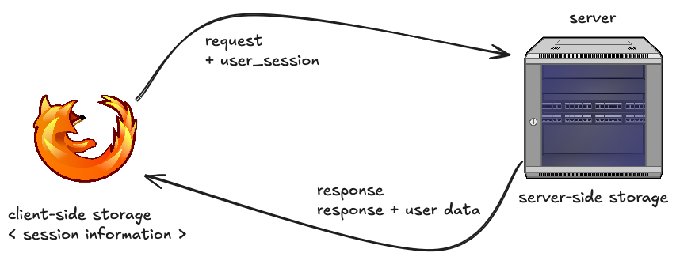
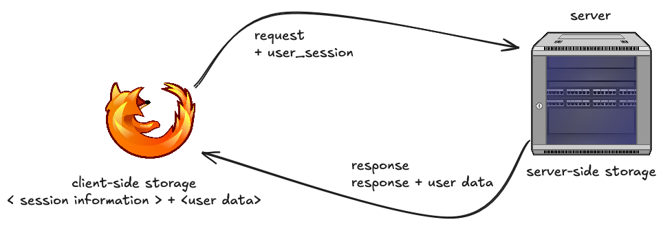
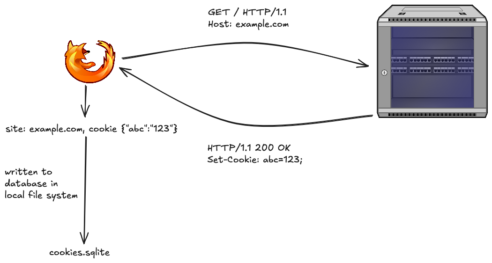
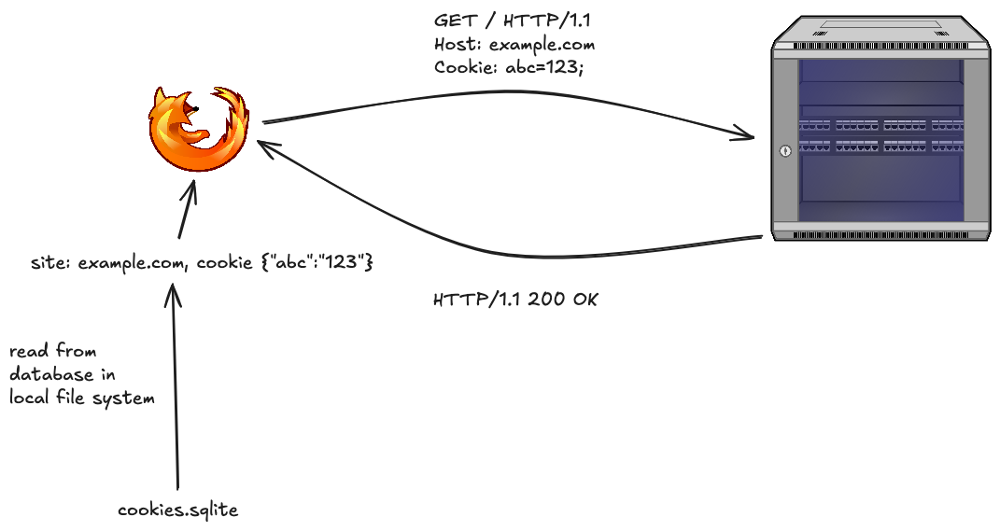
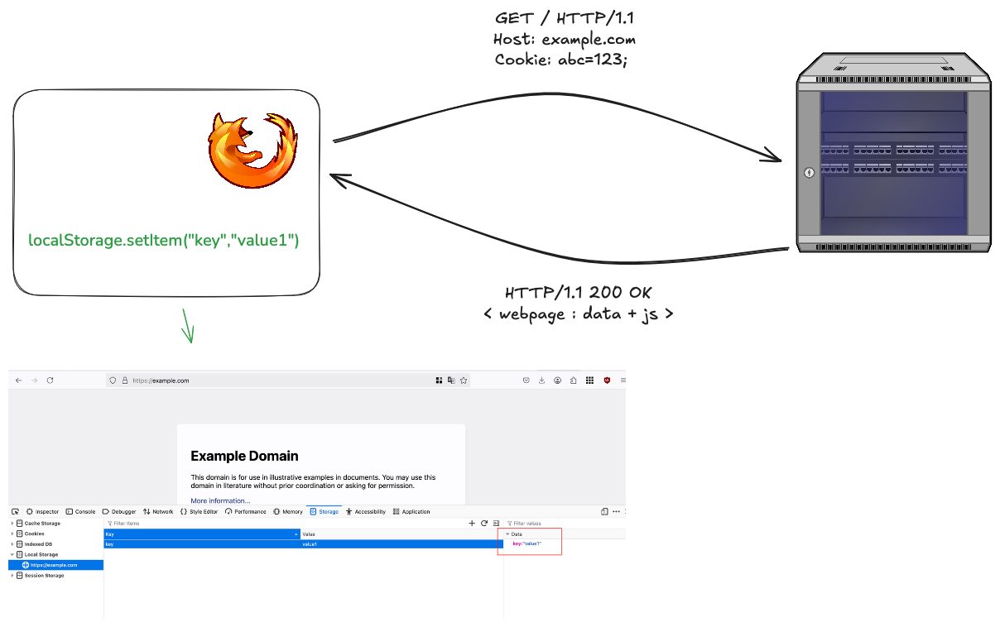
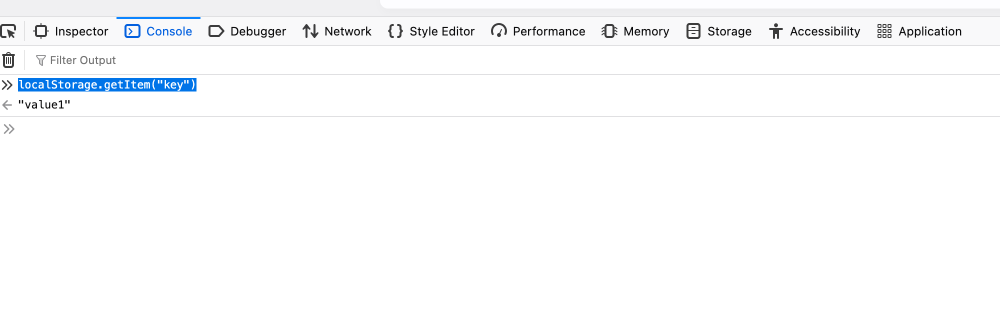

Threat Modeling Browser’s Storage
Introduction
In the early days of the World Wide Web, websites were primarily static. The server responded with the same static file (say home.html for the home page) without any user-specific personalization on every request. Every visitor to any web application receives identical content from the server. As web applications evolved, the need to have personalized content tailored to each user became a necessity. Websites needed to store data and generate customized content in real time based on user interaction, specific requests, and/or backend processes. This required the servers to store user information and verify the user's identity when serving the requests. As HTTP is a stateless protocol, web applications require a way to store user-identifying information on the client side, which could be sent with every request. Thus, the cookie was born.
The predominant architecture that emerged from all this involves server-side storage of user data, with browsers maintaining session information to identify logged-in users and facilitate personalized content delivery.

Web applications have become integral to our lives as the internet has grown. Everything is moving to the web, and web applications are becoming sophisticated and feature-rich. The data the server needs to send on each request is growing exponentially. If data is only stored on the server and transmitted on each request, the load times for each website would be very high. Storing some of the information from previous requests on the client end significantly increases the response times, removes the burden on the server to serve huge amounts of data in each request, and allows the javascript running on the browser to give unique user experiences. Today, web applications store significant information on the client side in the browsers.

Access to Client-Side Storage
Like any other program in your operating system, browsers run as a process. When it's running, this process gets its own set of memory. In multithreaded systems, this process can spawn o processes, which are child-to-parent processes. In most modern browsers, a site is run as an isolated child process that has only access to its data in the memory. A process can write to disk and fetch from it. Most modern operating systems have discretionary access control, meaning access to data is based on the user's identity. This means that anything stored on the client side by any web application is stored within files that high-privileged users can access, say, Administrators and root users (and malware that has gained permission from said high-privileged users). For example, Mozilla stores all of its cookies inside a file called cookies.sqlite, which resides within Mozilla's profile directory. It takes a simple SQLite3 reader to parse the file and extract sensitive information.
The Same-origin Policy governs access to client-side information for the sites rendered in a browser. A document's origin is a unique identifier that combines protocol (https://), domain (example.com), and port number (443).
The same-origin policy states that a web browser permits scripts contained in a first web page to access data on a second web page, but only if both web pages have the same origin.
Two URLs have the same origin if the - protocol, - port (if specified), and - Host is the same for both URLs.
Websites with the same scheme, hostname, and port combination are considered "same-origin."
Here's a table illustrating Same-Origin Policy scenarios using sureshpantha.com.np as the base origin:
| Origin | Same/Different | Reason |
|---|---|---|
| https://sureshpantha.com.np | Same Origin | Identical protocol, hostname, port |
| http://sureshpantha.com.np | Different Origin | Different protocol (http vs https) |
| https://www.sureshpantha.com.np | Different Origin | Different subdomain |
| https://sureshpantha.com.np:8080 | Different Origin | Different port |
| https://example.com | Different Origin | Different hostname |
| https://sureshpantha.com.np/page | Same Origin | Path doesn't affect origin |
Client-Side Storage
Browsers store information about users, sessions, or site preferences directly on the client device, which is client-side storage. By storing data on the client side, developers can significantly reduce load times and make websites more responsive and reliable. Storing sensitive data on the client side opens it up to attacks and can lead to significant exposure. Understanding how data is stored and accessed helps web developers decide where to store data safely.
In modern web applications, we can store data in the client's browser in one of the following ways: - Cookies - Web Storage API - Local Storage - Session Storage
Cookies
HTTP cookies are data stored in the client’s device, which enables websites to track sessions, remember user preferences, and personalize web experiences. A cookie is transmitted through the Cookie Header after being set by the server using the Set-Cookie response header.

Along with the key-value pair, the server can set an expiry date after which the cookie expires. If no date is set, session cookies (without an expiration date) expire when the browser is closed. Persistent cookies without an explicit expiry date typically default to not being set, which means they won't be automatically stored or transmitted after the current browsing session ends. The cookies set for a site are sent to the server for every subsequent request.

| Attribute | Details |
|---|---|
| Use Case | Small Pieces of information about user preferences, user tracking, session management, and remembering stateful information |
| Expiration | Session-based (deleted when session is closed ), can be made persistent by setting up expiry date |
| Data Capacity | 4 KB per cookie. Each browser has a threshold for how many cookies are allowed per site. |
| Constraints | - Cookies are sent with every request to the server - Access to cookies are subject to security policies and same-origin restrictions |
Who can access cookies associated with a domain?
In terms of access to the data stored inside the cookies,
Same-Origin Access
A cookie set by example.com can be accessed by any JavaScript running on any page from the same origin by default. We can also explicitly specify which subpages have access to the cookie using the Path attribute.
The
Pathattribute indicates a URL path that must exist in the requested URL in order to send theCookieheader.
Cookies can be accessed by subdomains if the Domain attribute is set while the cookie is being set.
The
Domainattribute specifies which server can receive a cookie. If specified, cookies are available on the specified server and its subdomains. For example, if you setDomain=mozilla.orgfrommozilla.org, cookies are available on that domain and subdomains likedeveloper.mozilla.org.
Access to cookie data by Javascript can be completely almost restricted by using the HttpOnly flag. This ensures that the cookie is safe from XXS vulnerabilities present in the page.
A cookie with the
HttpOnlyattribute can't be accessed by JavaScript, for example usingDocument.cookie; it can only be accessed when it reaches the server. Cookies that persist user sessions for example should have theHttpOnlyattribute set — it would be really insecure to make them available to JavaScript. This precaution helps mitigate cross-site scripting (XSS) attacks.
Browser Access
- Users can view and delete cookies through browser settings/dev tools.
- Browser extensions with appropriate permissions can access cookies.
- The browser itself manages and enforces cookie access controls.
Server-Side Access
- The web server of the domain that sets the cookie receives cookies in HTTP requests
- Back-end services of that domain can process cookie data
- Load balancers/proxies in front of the server may also see cookies
Security Considerations
- Cookies are protected using the same origin policy, where data stored is scoped to the document’s origin, meaning the webpage can only access data if it has the same origin by default.
- This means that if an attacker can inject JavaScript into a webpage (XSS), that attacker-controlled JavaScript can access all stored cookies in the client’s browser.
- As cookies have to be sent with each request, they can be stolen if an attacker gets access to these requests eg . Load balancers/proxies
-
Several attributes have been introduced which can be sent with the Set-Cookie header to ensure the browser handles cookies in a certain way;
-
Secureattribute instructs the browser to only send the cookie over encrypted HTTPS connections. -
Cookies with
HTTPOnlyattribute are not accessible from Javascript and, therefore, unaffected by cross-site scripting (XSS) attacks. -
Cookies'
PathandDomainattributes precisely control cookie accessibility across web applications.-
The
Pathattribute restricts a cookie to specific server routes—for instance, settingPath=/adminensures a cookie is only accessible within administrative sections, preventing other application segments from reading it. -
Similarly, the
Domainattribute allows cookie sharing across subdomains; usingDomain=.example.comenables a single cookie to be valid forblog.example.com,store.example.com, andwww.example.com, facilitating unified authentication and tracking across different service endpoints while maintaining security boundaries.
-
-
The SameSite cookie attribute controls how cookies are handled in cross-site requests, helping protect against Cross-Site Request Forgery (CSRF) attacks. It offers three settings:
- Strict (most secure, only sends cookies in first-party context),
- Lax (default, allows cookies in top-level navigations), and
- None (allows cross-site cookie transmission, requires Secure flag).
-
Web Storage API
Web storage API provides a mechanism to store key-value pairs in the browser. It is generally divided into Local Storage and Session Storage.
Local Storage
Local storage is a feature in web browsers that lets web developers save data in users' browsers. It is part of the Web Storage API along with Session Storage. When users request a webpage, the server sends data and the Javascript code to save in the browser — local Storage stores data as key-value pairs. Data saved through local storage persists on the browser when the page is closed or refreshed. Data in localStorage is saved using the localStorage.setItem() method.


| Attribute | Details |
|---|---|
| Use Case | Storing larger amounts of data client-side, web app configurations, non-sensitive user preferences, offline data, cached assets |
| Expiration | Persistent until explicitly cleared by code or user. Survives browser restarts and OS reboots |
| Data Capacity | ~ 5-10 MB (varies by browser). Significantly larger than cookies |
| Constraints | - JavaScript access only (no server access) - Same-origin policy applies - Synchronous operations can block main thread |
Who can access Local Storage associated with a domain?
Same-Origin Access
Similar to the cookie, access to localStorage is governed by the Same-Origin Policy. Data stored in the Local Storage is shared between all tabs and windows from the same origin. There are no attributes that can restrict access to data stored in localStorage.
Browser Access
- Users can view and clear localStorage data through browser developer tools or settings
- Browser extensions with appropriate permissions can read/modify localStorage content
- The browser will control access to localStorage by an application using the same-origin policy, so data is accessible only for scripts from the same domain that created it.
- Unlike cookies, localStorage data persists indefinitely until explicitly cleared by the user or application.
- The browser enforces a storage limit (usually around 5-10 MB) for localStorage per domain.
Server-Side Access
- The web server and backend services cannot directly access localStorage data since it remains client-side only.
- localStorage data is not automatically sent with HTTP requests like cookies are.
- You need to share data in localStorage with the server: You need to consciously read it using JavaScript and send it using AJAX/fetch requests or form submissions.
- Load balancers and proxies never see localStorage data because it remains within the browser.
Session Storage
sessionStorage is similar to localStorage, but stores data only needed for the current session. The data is cleared when the user navigates away from the page, or the browser is closed.
| Attribute | Details |
|---|---|
| Use Case | Temporary data storage during a single page session, form data backup, per-tab state management, temporary user preferences |
| Expiration | Data persists only for the duration of the page session. Cleared when tab/window is closed |
| Data Capacity | ~5-10 MB (varies by browser). Similar to localStorage |
| Constraints | - JavaScript access only (no server access) - Same-origin policy applies - Limited to single browser tab/window which created the session storage - Synchronous operations |
Who can access localStorage associated with a domain?
Same-Origin Access
Similar to localStorage, access to localStorage is governed by the Same-Origin Policy. Unlike localStorage, data stored in sessionStorage is not shared between all tabs and windows from the same origin. It is only accessible within the same tab/window that created it. Each tab/window gets its own separate sessionStorage instance, even from the same origin.
Browser Access
In terms of Browser Access, access to sessionStorage is similar to that of localStorage except for two distinct differences, - Unlike localStorage, sessionStorage data is cleared automatically when the tab/window is closed. - Each browser tab maintains its own separate sessionStorage instance, even for the same domain.
Server-Side Access
Server-Side Access of sessionStorage is similar to that of the localStorage.
Security Considerations
- Same Origin Policy applies for Local Storage and Session Storage. Access to data is protected using the same origin policy, where data stored is scoped to the document’s origin, meaning the webpage can only access data if it has the same origin by default.
- Local Storage and Session Storage is accessible to Javascript running on the pages with the same origin. Any XSS vulnerabilities present in the site, poses significant risk. There is also no equivalent attribute like
HTTPOnlywhich can be used. Thus storing any critical data is not recommended. - All data in Local Storage and Session Storage is not encrypted by default and stored in plain text. Encrypting client side storage is a difficult problem to solve and not straight forward.
Key Difference between Cookies & local/session Storage in terms of Security
- Cookies are sent with every request but local/session Storage which decreases the attack surface.
- Javascript running on pages within the same origin can access data stored in local/session Storage, while we can deny access to cookies by using attributes like
HTTPOnly. - There are no built-in attributes for security configuration for local/session Storage but access to cookies can be configured using built-in attributes.
Conclusion
- The difference between localStorage and cookies is mostly about what is being stored and intended use cases,
- Cookies are better for session management and authentication, Security-sensitive information (when properly configured), and data that needs to be sent to the server in each request for Server-side processing.
- localStorage is better for client-side data, UI preferences, Cached data, and Non-sensitive information.
Cookies should be used for session management and authentication because of their flexible security controls. It is also vital to have proper restrictions in place for access to cookies with available security attributes instead of relying on localStorage, which doesn't support these built-in protections.